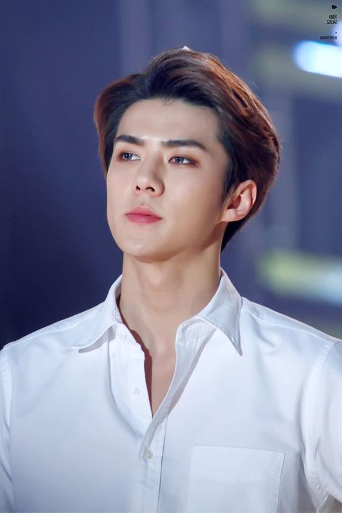
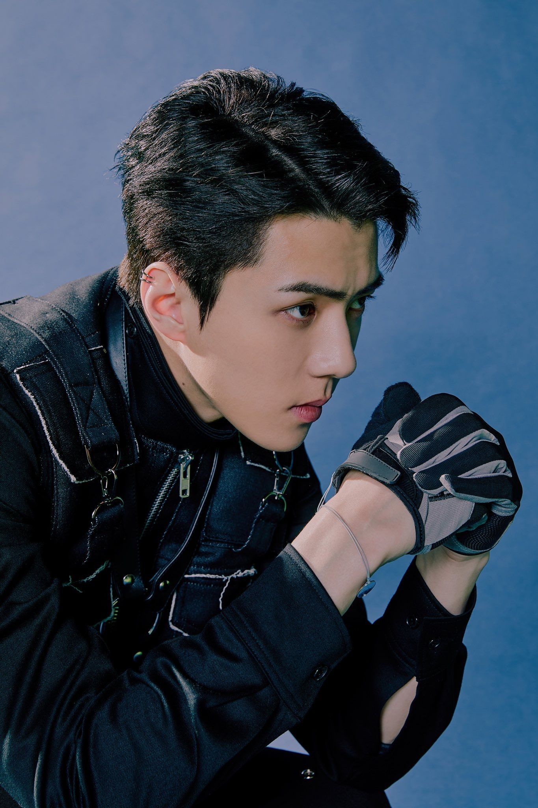
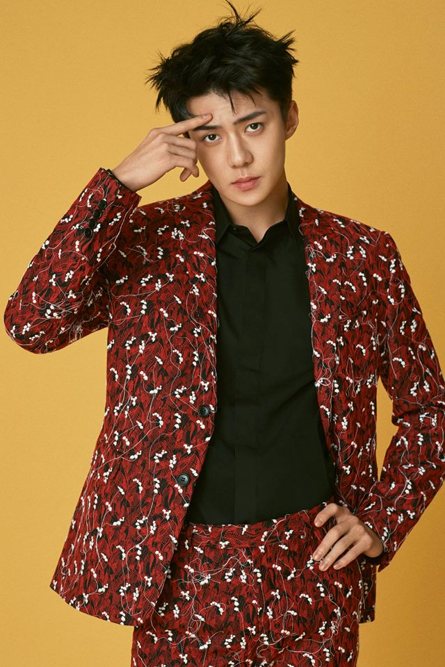
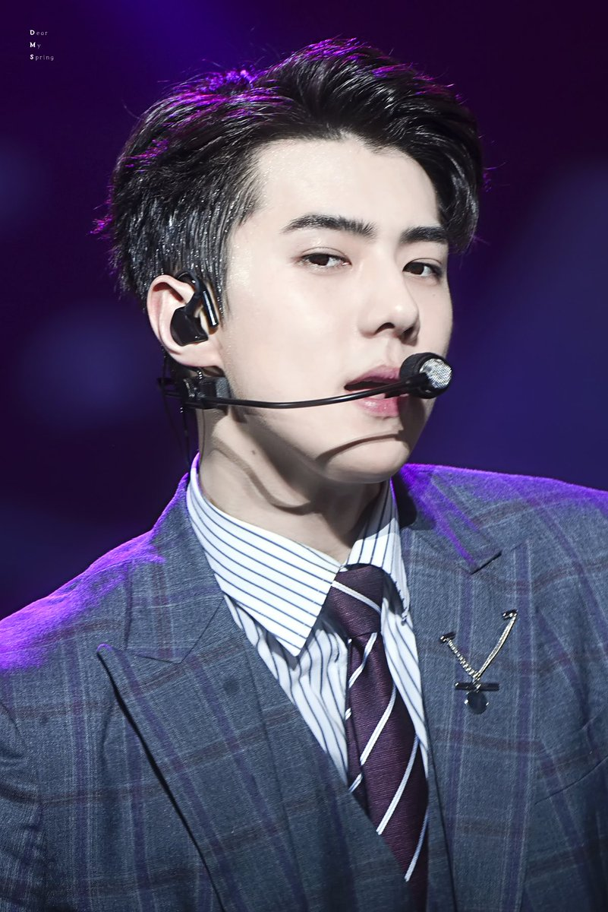
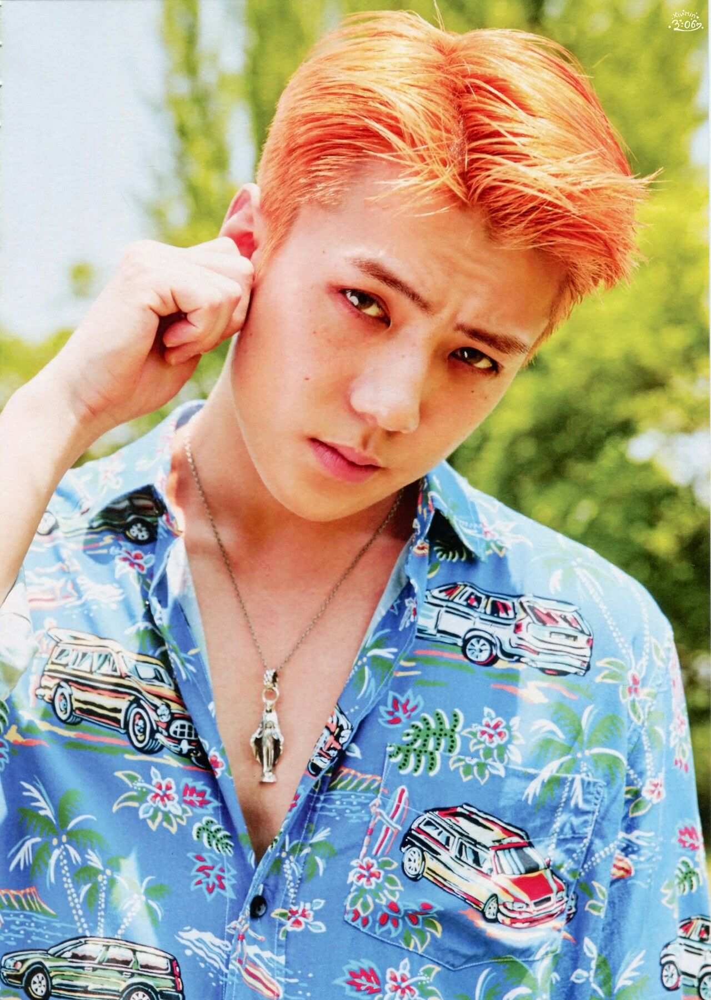

Я вітаю тебе на цій сторінці про популярну корейську
группу ЕХО, залишайся з нами:)

Я вітаю тебе на цій сторінці про популярну корейську
группу ЕХО, залишайся з нами:)
| Псевдонім | Сехун |
| Справжнє ім'я | О Сехун |
| Родився | 12 квітня 1994 року |
| Родом з | Сеул, Південна Корея |
| Ріст | 181 см |
| Група крові | O |
О Сехун (кор. 오세훈, англ. Оoh Sehun),
народився 12 квітня 1994 року, Сеул. Південнокорейський співак, репер, танцюрист, модель і актор. Учасник бой-бенду EXO і
підгрупи EXO-K і її підрозділи EXO-SC. Також
він найменший учасник в групі.
Окрім діяльності своєї групи, Сехун також знявся в різних дорамах і фільмах, таких як «Попався!», «Таємні творці королеви» (2018) і «Докго: Перезавантаження» (2019). 28 червня 2019 року був підтверджено, що Сехун разом з іншим членом Exo Чаньолем дебютують в якості другого офіційного підрозділу EXO-SC. 22 липня вони випустили свій альбом What A Life.
    